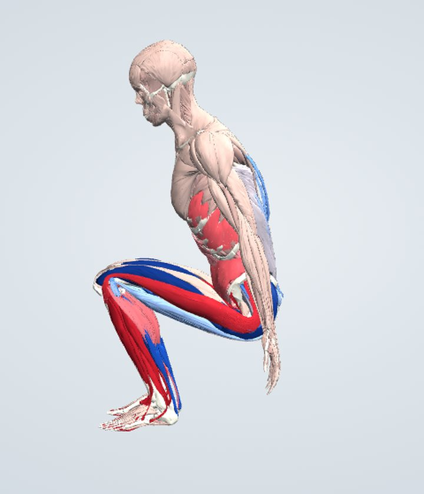
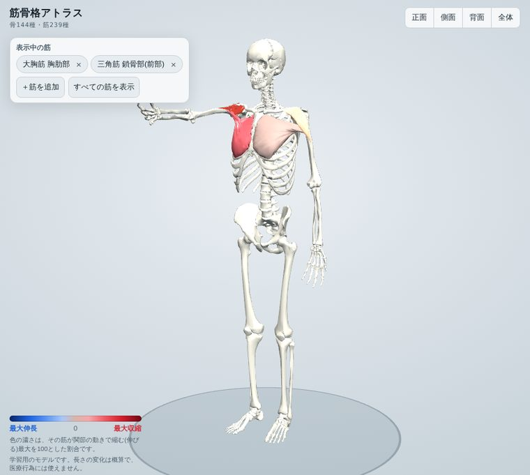
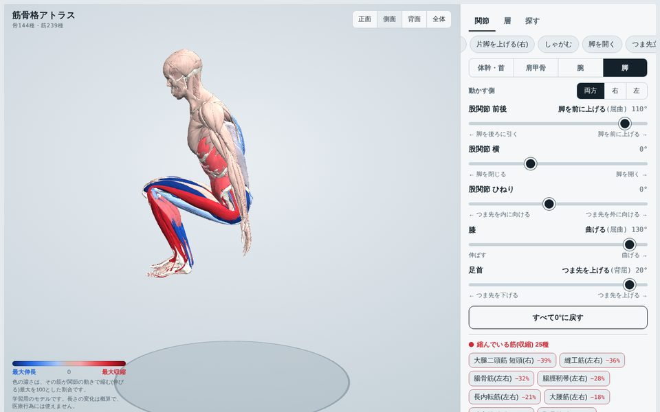
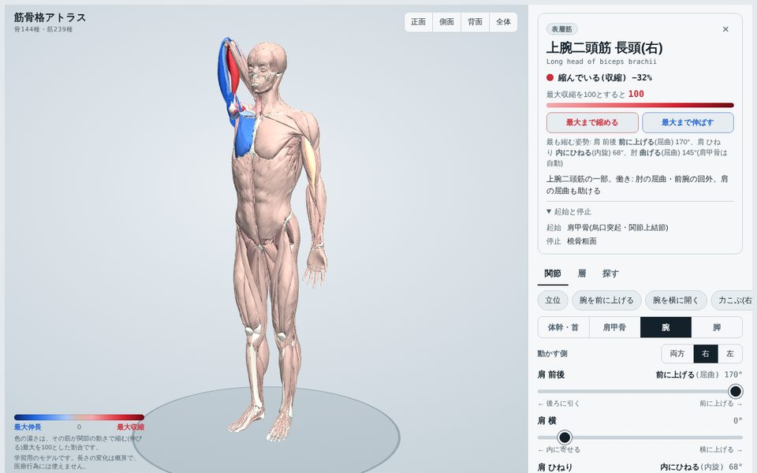
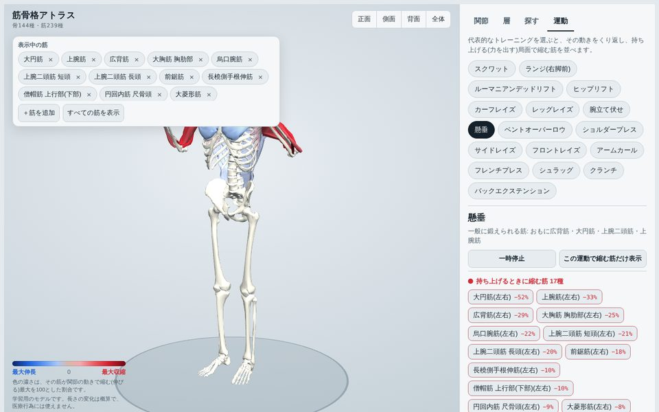
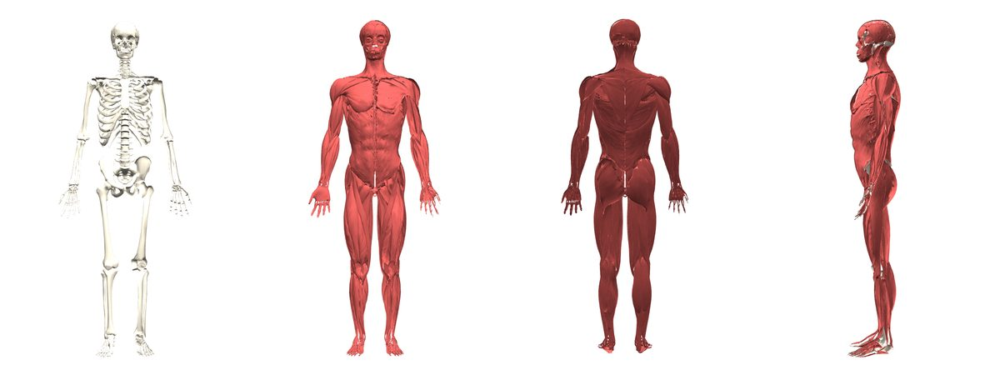

筋骨格アトラス / 3D Anatomy
関節を動かすと、
筋肉が縮むのも伸びるのも見える。
筋骨格アトラスは、実際の人体データから作った3Dモデルで骨と筋肉を学べる解剖アトラスです。タップで名前、層ごとにはがして深部へ、関節を動かせば筋の伸び縮みが色でわかります。インストール不要、ブラウザだけで使えます。
- 239筋
- 144骨
- 20関節の動き
- 17種の運動

Features
筋骨格アトラスでできること
教科書の図では分かりにくい「立体の位置関係」と「動いたときにどの筋が働くか」を、自分の手で動かして確かめられます。

タップで名前と起始・停止
骨や筋をタップすると和名と英名、左右、起始・停止・働きが表示されます。名前で検索してその部位へ移動したり、選んだ筋と骨格だけを表示したりもできます。

関節を動かすと、伸び縮みが色でわかる
体幹・首・肩甲骨・肩・肘・手首・股関節・膝・足首の20項目を左右別に動かせます。縮む筋は赤、伸びる筋は青。肩甲上腕リズムも再現しています。

「最大まで縮める」で、その筋の役割がわかる
選んだ筋が最も縮む姿勢・最も伸びる姿勢を自動で探して再現します。ストレッチの向きや、筋がどの動きで働くかを確かめるのに便利です。

トレーニング17種の動きを再生
スクワット、懸垂、ショルダープレスなどの動きをくり返し再生し、持ち上げる局面で縮む筋を一覧にします。どの種目でどの筋が働くのかを立体で確認できます。

浅層から深層へ、1枚ずつはがす
筋肉は浅層・中層・深層に分かれていて、外側から1層ずつはがして奥の筋を見られます。骨の表示も切り替えられます。
For
こんな方に
解剖学を学ぶ学生
医療・看護・リハビリ・スポーツ系の授業や国家試験の勉強に。起始・停止と働きを立体で結びつけて覚えられます。
トレーナー・セラピスト
お客さまへの説明に。「この動きでこの筋が縮む」を画面で見せられます。
筋トレ・ストレッチをする人
いま鍛えている筋、伸ばしている筋がどこにあるのかを確かめられます。
Contents
コンテンツ
筋肉ラボでは、体のしくみを動かして学べるコンテンツを順次公開していきます。
筋骨格アトラス
骨と筋の3Dアトラス。関節を動かして筋の伸び縮みを見る。
トレーニング図鑑
種目ごとに、働く筋とフォームのポイントをまとめる予定です。
筋肉クイズ
3Dモデルで筋の名前や起始・停止を答える練習問題の予定です。